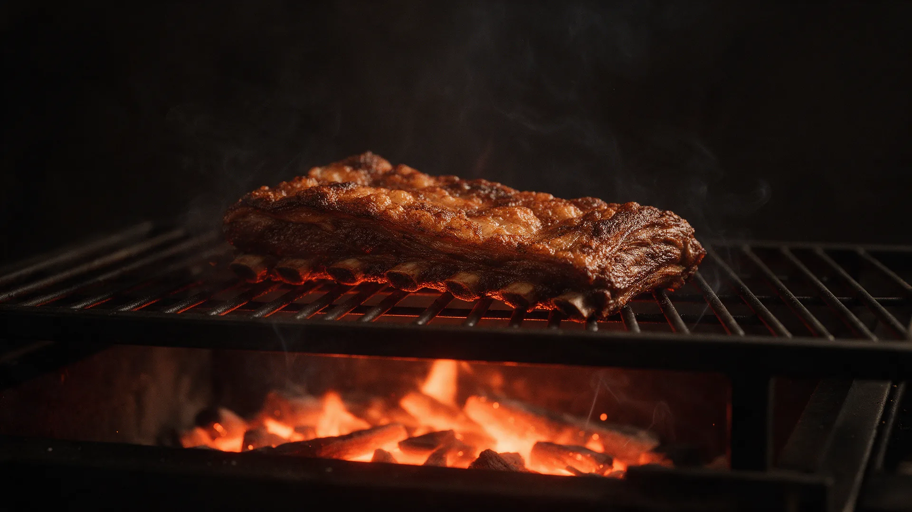
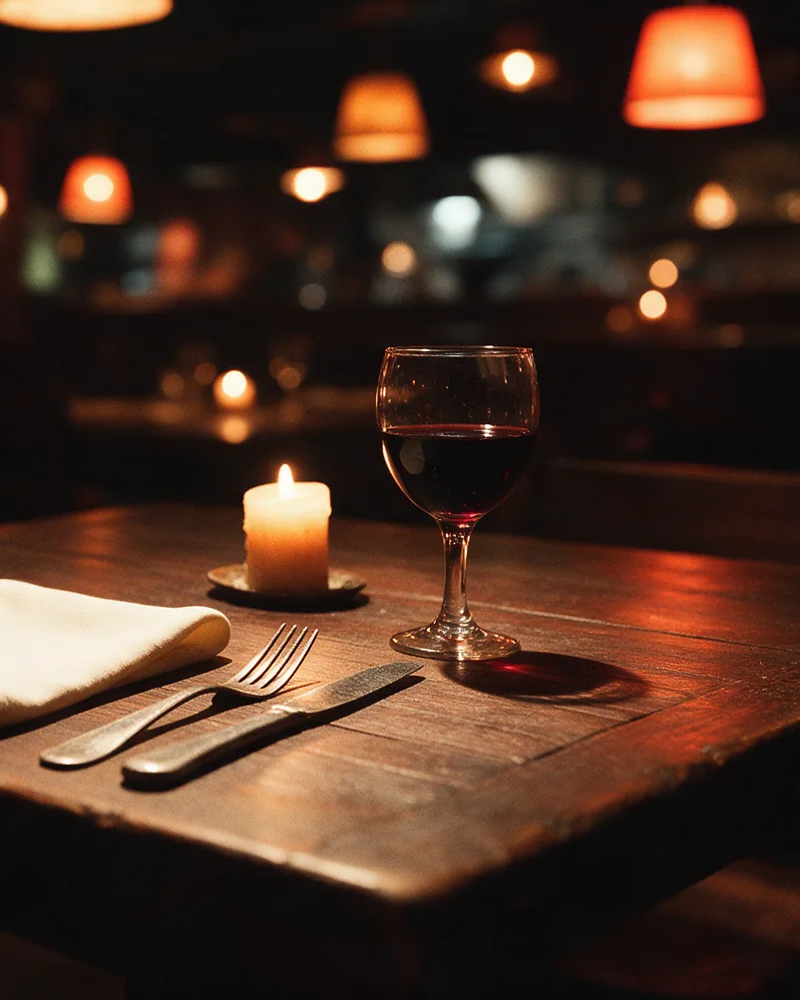
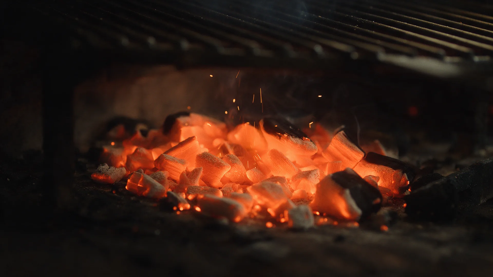
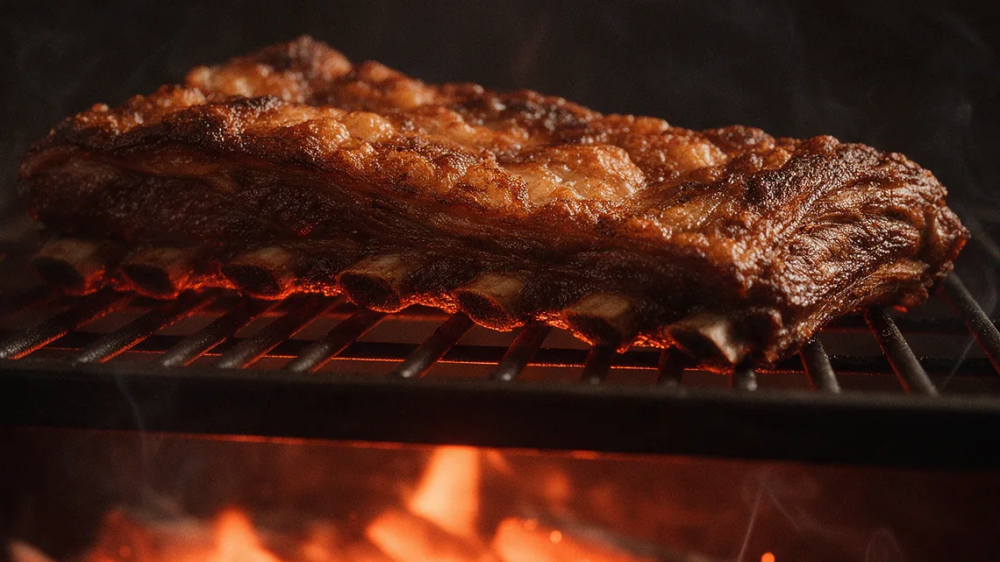
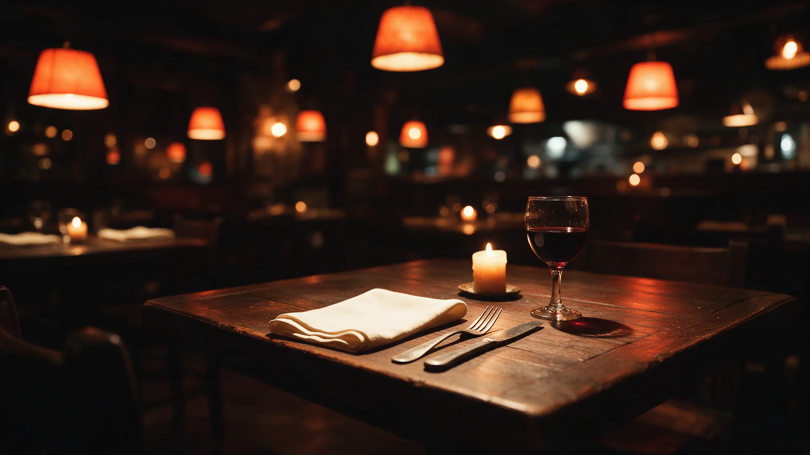

La Pasión
de Rosas
«Se cocina para pocos, y se reserva con tiempo.»
No es solo
una parrilla.
Es a puertas cerradas.
En Ezeiza, a las brasas y con reserva previa. Se cocina para pocos: cada servicio se prepara con tiempo y cada mesa se acuerda de antemano. Eso es lo que permite que la noche tenga su propio ritmo, que el fuego trabaje despacio y que nadie esté apurado.


Todo comienza con el fuego.
Brasas, tiempo y paciencia. El resto llega solo.
PendientePlatos y precios de ejemplo, para mostrar cómo se ve la carta. Todavía no están confirmados por el restaurante: no publiques el sitio con estos valores.
Lo que sale de la parrilla.

Costillar
El corte que define la casa: horas de brasa baja hasta que cede solo. Se sirve para compartir.
La experiencia,
en imágenes.
Imágenes de referenciaLas fotos de esta página son imágenes de referencia, generadas para mostrar la estética. No son fotografías del local ni de sus platos.
Un lugar. Muchos motivos.
Hay momentos que merecen salir de lo cotidiano. Una cena esperada, una mesa larga en familia, una conversación que necesita otro escenario o un brindis que estuvo mucho tiempo pendiente.
Contanos cuál es el tuyo cuando escribas: la mesa se prepara distinto según la ocasión.
PendienteEnlaces encontrados en una búsqueda, todavía sin verificar uno por uno. Revisalos antes de publicar el sitio.
Encontrá
la mesa.
Trabajamos con reserva previa. Escribinos y coordinamos el día, el horario y la cantidad de personas.
Ezeiza
Berutti 287, esquina Illia · Ezeiza (1804), Provincia de Buenos Aires
Días y horarios a confirmar · escribinos
Berutti 287, esquina Illia · Ezeiza (1804), Provincia de Buenos Aires
-34.855232, -58.528592
El mapa de Google no se pudo cargar acá: puede estar bloqueado en esta vista o en tu red. El enlace de abajo lo abre igual.

Tu mesa
te espera.
Escribinos y la preparamos.
A confirmarTodavía no está publicado el canal oficial de reservas. En cuanto esté, aparece acá.